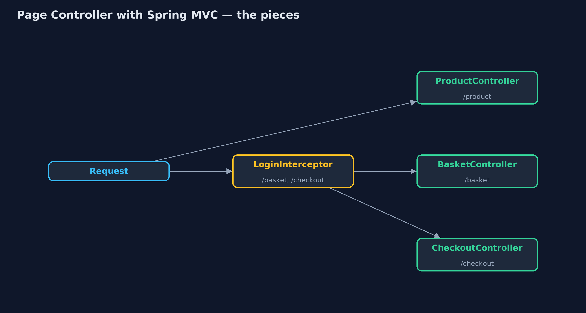
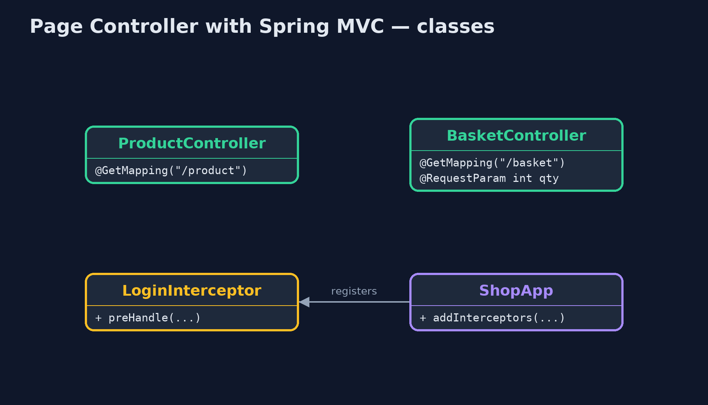
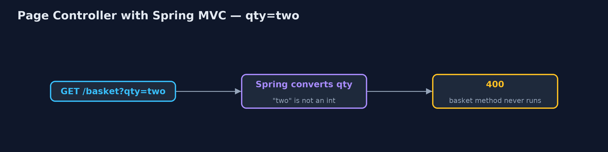
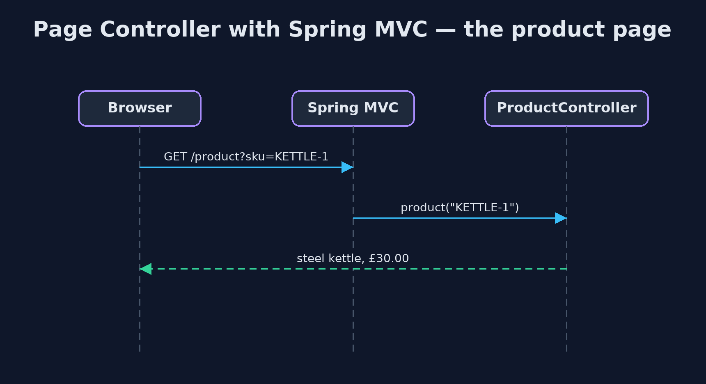

Page Controller with Spring MVC Pattern
src/main/java/com/jk/explore/pagecontrollermvc/
├── BasketController.java The basket page's own controller
├── Catalog.java The shop's products and prices
├── CheckoutController.java The checkout page
├── LoginInterceptor.java A check that runs before the controllers it is registered for, so no page's author can forget it
├── OldFrontHandler.java Before: one handler for every page under /old
├── ProductController.java The product page's own controller: its input, its logic, its errors
├── ReviewsController.java A new page: a new class, and nothing else changed
├── ShopApp.java The shop's web application
└── SpringPageControllerDemo.java The five acts: a real Spring MVC web application on a local port, called over HTTPGive each page of the shop its own Spring MVC controller, let Spring convert and check each page's input, add pages without opening the others, and keep checks every page needs in one HandlerInterceptor.
This is the framework version of the Page Controller pattern. The plain Java version, a separate project in this category, registers a handler object per page on the JDK's HTTP server. Here Spring MVC does it: each page is a class marked @RestController, its address is an @GetMapping, and Spring finds every controller by its annotations. The demo runs a real Spring Boot web server and calls it over HTTP.
Spring also takes over the chores each page used to do by hand. It converts request parameters to the types the method asks for and answers 400 when it cannot, and it turns an exception with a status into the right response. Checks that every page needs, such as being logged in, go in a HandlerInterceptor registered once, so no page's author can forget them.
The idea in everyday terms
Think of a department store with a counter for each department: shoes, kitchenware, toys. Each counter knows its own products and answers its own questions. The doors at the front, where everyone's bag is checked, are shared by every counter.
The scenario
The online store's pages were served by one handler that grew a branch for every page. Quantity parsing added for the basket ran for every page, so the product page crashed, and each new page meant editing the one handler everyone shared.
Run
Nothing to install beyond a Java 21 JDK: the Spring Boot web server starts inside the program, on a local port.
./gradlew runThe demo tells the story in 5 acts, each printing exact numbers that the tests check:
| Act | What it shows |
|---|---|
| 1. One handler for every page | A single handler serves every page; quantity parsing added for the basket makes the product page answer 500. |
| 2. A controller per page | ProductController and BasketController each own one page: the kettle is £30.00, the basket holds 2 mugs. |
| 3. Input checked by Spring | An unknown product gets 404 from a ResponseStatusException; qty=two gets 400, because Spring could not make it an int. |
| 4. A new page | A ReviewsController is added; /reviews works, and no other controller was opened. |
| 5. The bill, and an interceptor | Checkout's author forgot the login check: 200 when logged out. One HandlerInterceptor for /basket and /checkout gives 401, then 200 when logged in. |
Test
./gradlew test1 tests in DemoRunsTest. Every result the demo prints is asserted, with a real Spring MVC application on a local port, called over HTTP.
What the simulation got right, and what it left out
The plain Java version got the idea right: one controller per page, each owning its input and errors, a new page as a new class, and shared checks repeated on every page as the cost. What it left out is how a framework carries it. Spring finds each controller by its annotation, converts parameters and answers 400 for "two" as a quantity with no code in the page, and turns a ResponseStatusException into a 404. And it removes the plain version's cost: a HandlerInterceptor registered once for the basket and checkout pages makes the forgotten login check impossible to forget.
Technologies and versions
| Technology | Version | Used for |
|---|---|---|
| Java | 21 | the code (toolchain set in build.gradle) |
| Gradle | 9.2.1 (wrapper) | build and run, nothing to install |
| JUnit | 5.10.2 | the tests |
| Spring Boot | 4.1.1 | the embedded web server |
| Spring MVC | with Spring Boot 4.1.1 | @RestController, @GetMapping, @RequestParam conversion, HandlerInterceptor |
| videokit | repository tool | the narrated video and animation: Piper en_US-amy-medium, speed 0.8, longer pauses (the approved amy-slow voice) |
Learning Material
| Document | What it is for |
|---|---|
| Dependencies | what the framework and infrastructure are, and why they are here |
| Problem statement | the situation and what the project must show |
| Prerequisites | what you need to know first |
| Page Controller with Spring MVC, explained | the acts in prose |
| Session guide | a one-hour lesson with exercises |
| Animated walkthrough | the acts step by step, narrated |
| Spec | what this project must be true of |
The pattern in one picture
One controller per page; one interceptor for the shared check.

Where each piece sits
Found by annotation.

How the data moves
Refused before the page's code runs.

Who calls whom, in order
Spring picks the controller by path.

Video
video/page-controller-with-spring-mvc-pattern-explained.mp4 (with .m4a audio and .srt subtitles) is built by video/build_video.sh. Rendered media is not committed.
What it costs
- Shared checks need a home. Without an interceptor, checkout's author forgot the login check, and anyone could see the checkout page.
- Many small classes. A controller per page spreads the application over many files.
- Framework conventions to learn. Annotations, mappings and error handling are Spring's, not Java's.
When this is too much
For a handful of pages with little logic, one small controller is fine. A controller per page pays off as pages grow their own input, logic and errors.
Where you have already met this
- Spring MVC
@Controllerand@RestControllerclasses. - Pages in PHP, JSP and ASP.NET Razor Pages, one file per page.
- Django and Rails views and controllers per page.
Where this sits
This project is in enterprise-design-patterns. It is the framework version of the plain Java Page Controller project in the same category, which is left unchanged.